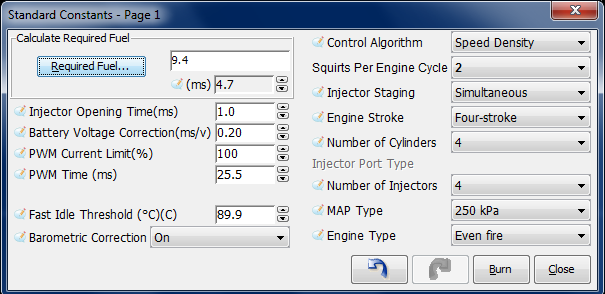
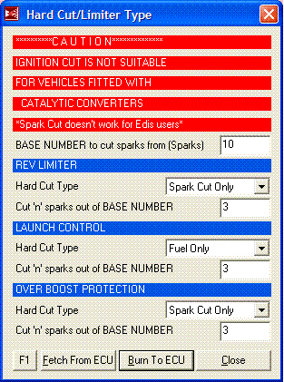
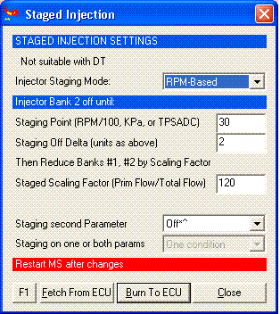

|
Click here to email me if you have any questions
MS1 Settings Manual
|
Images shown are from Tuner Studio and MegaTune, users will find they are very similar and have the same functions, but Tuner Studio has more features for helping you tune. Note that for a Wankel rotary engine (Mazda 13B, etc.) these settings are a little different as they are like a 2 stroke, not a 4 stroke.  If you are running high-impedance injectors (greater than 10 Ohms), then set the:
If you have low impedance injectors (less than 4 Ohms), set the:
For more information on these settings please click here. Control Algorithm - Please click here for more information on this. Change the selection at the top (highlighted RED) to Alpah_N, then save and close the program. The next time MegaTune is opened it will be in Alpha_N mode. Required Fuel Ensure that the NUMBER of CYLINDERS has been set before using the wizard! In order to come up with this value, MegaTune provides a calculator that will suffice for 99% of applications (those for which it will not work generally require changes to the MegaSquirt controller code itself, and that is beyond the scope of this manual). To use the wizard, click on the Required Fuel button, and fill in the fields (Engine Displacement, Number of cylinders, Injector flow, and Air:Fuel ratio(14.7), then click "Okay"). For a 4-stroke, a complete stroke cycle is 720 degrees of crankshaft rotation (i.e. two revolutions); for a 2-stroke, it is 360 degrees (this is also factored in the REQ_FUEL value down loaded to MegaSquirt). In the tuning software, the upper REQ_FUEL box is the amount per cylinder, as noted above. The lower REQ_FUEL box is the value down loaded to MegaSquirt. It is the REQ_FUEL number on top, but scaled by your selected injection mode (number of squirts and alternate/simultaneous), this can be ignored as it is the upper number thats the important value. For example, if you inject simultaneous and one injection, and have the same number of injectors as cylinders [i.e. port injection], then REQ_FUEL on the bottom is the same as REQ_FUEL on top. Same with alternate and two squirts. If you put in simultaneous and two squirts, then REQ_FUEL is divided in half - because you squirt twice, you need to inject 1/2 the fuel on each shot. Note: if you choose alternating for port injection, make sure your number of squirts is an even number (2,4,...) and evenly divisible into the number of cylinders. For example, with an eight cylinder engine, you could use alternating and 2, 4, or 8 squirts/cycle. With a six cylinder, if you choose alternating, you MUST use 2 or 6 squirts/cycle. Also, the only possible combinations for an odd-cylinder count engine are either 1 squirt/simultaneous or N squirt/simultaneous combination, where N is the number of cylinders."
"OK" means the combination will work with either simultaneous or alternating. "no" means it will not work with either, i.e., not at all. Vertually all installs will use 2 (4 is ok for lower RPM engines like V8's) Values of 7 and above would most certainly not be used. If you have bought an MS ECU from www.ExtraEFI.co.uk then you will have default values already done for you. Injector Opening Time (ms) is the amount of time required for the injector to go from a fully closed state to a fully opened state when a 13.2 volt signal is applied. Since fuel injectors are electro-mechanical devices with mass, they have latency between the time a signal is applied and the time they are in steady-state spraying mode. Typically, this value is very close to 1.0 milliseconds. The MegaSquirt code assumes that NO fuel is injected during the opening (and closing) phases. However, it is very likely that a small amount actually is injected. Thus making this value larger will enrich the mix and will have a much greater effect at low pulse widths. MegaSquirt also uses this value as an additive constant in pulse width calculation, thus making this the lower limit for pulse width. Injections per Engine Cycle is set the number of squirts you want per engine cycle. You want this to be set so that your idle pulse width is no less than 2.0 ms, if possible, and your Req_Fuel is less than 12-15 milliseconds, but more than 8 milliseconds. These values allow proper tuning of the idle mixture while maintaining the ability to apply enrichments (acceleration, warm-up, etc.) under full throttle. This is the total injector events that you wish to occur for every engine cycle (360 degrees for two stroke engines and 720° for four strokes). Injector Staging values for injector staging are simultaneous or alternating. If you want all your injectors to fire at once, select simultaneous. If you want half your injectors to fire at each injection event, and the other half on the next event, select alternating. Note that with port injection, you must choose at least 2 squirts per cycle with alternating injection, otherwise every other cycle for each cylinder will get NO fuel! The engine will run very badly. There is some benefit to choosing 2 squirts/alternating for port injection, since only half of the injectors fire at once, the pressure drop in the fuel rails is reduced and the fuelling is more consistent. With throttle body injection, the number of injection/cycle you can will depend on your number of cylinders, plenum size, Req_Fuel, etc. You have to experiment to see what works best for your combination. Engine Stroke values for engine stroke type are two-stroke or four-stroke. MegaSquirt uses engine stroke to determine how many degrees are in an engine cycle. Number of Cylinders is the count of the cylinders on your engine. If you are unsure how many cylinders your engine has, you should not be installing MegaSquirt on it. Injector Port Type This is not used in MS-Extra, so no settings needed for this, it should be greyed out. Number of Injectors is the total number of injectors MegaSquirt is controlling, whether port or throttle body injection. (this is used in the Required Fuel calculation) MAP Type this should be set to 250KPa if you have a standard MAP sensor inside the MS ECU or 400KPa if you have the 400Kpa sensor fitted. For more on the 400KPa sensor see HERE Engine Type: This has the options of Odd fire or even fire. Odd-fire or even fire does not refer to the firing order, but rather the interval between successive firings. So if you have a 4 cylinder, and a spark every 180 degrees, you have an even fire. Almost all 4 cylinder engines are even fire. However some 90 degree V6s, some V4s, and most V-Twins (usually motorcycle engines), as well as a few others, have 'odd-fire' arrangements.
If you have bought an MS ECU from www.ExtraEFI.co.uk then this will all be done for you. When running ignition you must choose ONLY ONE code type and select as many spark outputs as you have coils. A distributor based setup must have Spark A ONLY. A 4cyl wasted spark setup must have Spark A, Spark B ONLY, so LED18 MUST be set to anything other than a Spark output, e.g. Warmup. Output3/Spark D MUST be set to output3, pin10 shift/Spark E MUST be set to Shift Light and Knocking/Spark F MUST be set to Knock Input even if they are not going to be used for those functions. A 8cy wasted spark would be like this example, ABCD spark outputs set ONLY, so pin10 shift / Spark E MUST be set to Shift Light and Knocking/Spark F MUST be set to Knock Input even if they are not going to be used for those functions. For a FUEL ONLY setup with a simple tach input signal (i.e. not a 60-2 wheel) turn OFF all ignition types and spark outputs (Ensure Spark A, B, C, D, E or F are NOT selected). If you are running a multi-toothed wheel like 36-1, 60-2, 24/2 etc. you have
to configure the wheel decoder as if you were running spark and set a minimum
of Spark A. LED17/D14 is ALWAYS Spark A output for ignition setups on ExtraEFI ECU's. Spark outputs must be used in sequence, i.e. for two outputs (4cy wasted)
you must use A,B
Prime Pump when: The Fuel pump can be fired for a 2S period when the power is first turned on to the MS ECU, this is used to prime the fuel lines, etc. You can select it to always prime when the power is turned on "Always" or only if the Priming pulse is set to a value greater than 0.0. Fire Priming Pulse: You can also fire the injectors so the intake has a little fuel in it ready for cranking, to aid starting. This pulse can be fired on power up (fuel lines may have little pressure in them), After 2S (so the fuel lines will be pressurized) or they can fire the pulse twice (this is for very large engines with small injectors) Priming PW Source: The pulse width can be the same as the cranking PW (use table) or a fixed value Standard Priming PW Cranking Pulse Width Temps: Usually this is set to CTL only, as this uses the coolant temperature to determine what PW to fire from the table. But in some cases the air temp (MAT) is a more accurate method if heat saturation is an issue. To tune all these settings and the Warmup, After Start and More Cranking Settings, please click here.
The rev limiter can cut fuel and or sparks depending on what system you are running, sparks cannot be cut in Edis mode or if you are using a catalytic converter.  The Base Number is the number of sparks that can be cut from
(yy). This value will depend on the number of cylinders you have but generally
10 is the best value to use. The MS ECU can finely adjust the VE Table using the feedback from the O2 sensor depending on the EGO settings. There may be occasions that you need the closed loop mode to stop, therefore open loop. This can be switched in at a certain TPS (ADC value) or at a certain MAP KPa. Set the figures to ZERO for no open loop! This is used to cut fuel off during deceleration to aid engine braking and reduce fuel use. The RPM setpoint will need to be a bit higher than your tickover speed, I would suggest it was around 800rpm higher than the tickover RPM so as the fuel and engine has time to settle down again once fuel is switched back in. The KPa should be set to slightly above the vacuum value pulled when decelerating, e.g. 20KPa. A typical delay time of 1-2S is best to ensure it doesn't hunt. To find your TPS setting value, go to Tools, Calibrate TPS, and with your foot completely OFF the throttle hit Get Current. Remember this value and hit CANCEL on the Calibrate TPS dialog. Add 2-3 to this value and enter it, so if you had a value of 20 enter 22 in the setting. On start-up MegaSquirt can record the ambient barometric pressure if set to ON in the Constants page. This adds the barometer correction multiplier to the VE, so it increases as pressure decreases. If the ambient baro pressure is low (high altitude) the algorithm adds fuel. This is mostly because at a given MAP, the engine will flow more air with less exhaust back pressure and therefore needs more fuel at higher altitudes. Once running the MAP sensor determines fuel based on you VE table entries which are then scaled by the baro correction recorded at start-up. The correction values used by MegaSquirt came from a code disassembly of a 1990 Corvette ECU. As the barometric correction is determined when the ECU powers up if it resets during running the current MAP value is taken in, the chances are the engine will be creating a vacuum so the value would be incorrect. You can set up limits so the correction is not so far out if the ECU resets. See "Baro Corrections" If you are unsure set the minimum to 90 and the max to 100 KPa and it will have no real effects during a reset. See the table if you drive at high altitudes.
If using Alpha-n mode (NOT HYBRID ALPHA_N) then you can use the MAP sensor that's on the MS board as a constant barometric correction sensor, but don't connect it to the manifold, simply leave it vented to atmosphere.
It can be helpful to fix the advance when at idle in order to keep a steady idle speed. To do this set the table up for an Idle Advance of around 8-12deg. Idle TPS Threshold: This should be just above your Closed Throttle ADC value. To find your TPS setting value, go to Tools, Calibrate TPS, and with your foot completely OFF the throttle hit Get Current. Remember this value and hit CANCEL on the Calibrate TPS dialog. Add 2-3 to this value and enter it, so if you had a value of 30 enter 32 in the setting. Idle Advance RPM is the maximum RPM value you want the advance to be held at. Idle Advance Coolant: Usually this would be your operating temperature as you may not want it holding ignition fixed whilst the engine warms up. Idle Advance Wait: After all the above parameters are within there settings this is the time delay before it is fixed.
The inlet air temperature has a massive effect on how much advance you can safely run, if the temperature increases above the norm, due to sitting in traffic, long/hard runs in boost, etc, the amount of advance can be retarded proportionately with the temp increase to help prevent detonation. This works in much the same way as the coolant related ignition but it RETARDS the ignition from the base map. In the example the ignition will be retarded by 1 deg every 5C the air temperature rises above 60C, so at 80C the spark map will be retarded by 4 deg. As there is no need to retard the ignition when cruising (detonation is highly unlikely) there is a Kpa above set point, so the retard only comes in when the engine is being driven above this setpoint, this should be set so it is slightly higher than your MAP Kpa at cruise and idle.
Staged Injection System is NOT for use in Dual Table (DT)
mode! This is mainly used in rotary engines where the stock Mazda throttle body wants to be used, as it is progressive in nature. The injection must be progressive too if the stock EFI hardware is to be used without modification. This requires the MegaSquirt to fire the primaries only until the secondary throttle plates have opened adequately.  If you want to have 2 conditions to turn the second bank on and off you can select this and then use the "More Staged Injection" settings to select when that condition will apply. There is also an "injector staging delay" in "more staged settings" where you can specify a number of ignition events to bring on the secondaries and scale down the primaries. It will gradually do the switch over on that many ignition events, if you specify 0, it just does it instantly. This helps people who have secondaries up the intake tract from primaries so the engine doesn't get a lean spot waiting for the fuel from the secondaries to get to the engine. The most critical setting is: This is for experienced users to alter their air density correction with coolant temperature rather than with air temperature. Some people have found that their engines lean out due to the air temp sensor becoming saturated by the engine's heat, this gives the ECU the impression the incoming air is really hot when in fact it is simply the sensor that’s been heated up by the mass of the engine.
To help TUNE this we have added Coolant Correction percentage. To ensure this selection is OFF go into "Coolant Related Air Density" then select "Settings" and ensure the selection is "NORMAL CORRECTION" To set this function ON you must select Settings (in the above table) and select Correction ON With this function enabled the correction percentage is interpolated from
the table, depending on the coolant temperature. So Air Density would now
be :
Hybrid Alpha N system adds KPa to an Alpha_N
setup. See the Aplha-N settings section for more details on Alpha-N. This
means that the KPa value becomes part of the fueling calculations, the same
as in Speed density, so when you go into boost the fueling will increase even
when you have the same VE value. The addition of fuel for boost comes through
the MAP term in the fuel equation: Thus increasing the VE at higher boosts makes the mixture richer, but it would not have run leaner simply because of the higher boost. This is very important for turbo applications where Alpha_n is used. All settings should be set for Alpha_N (Constants - Control Algorithm) Click here for more information. We have added the facility for a Mass Air Flow Meter to run the fuel calculations rather than a MAP sensor. Connect the MAF 0-5V output up to pin X7 (JS5) via a filter circuit as described on the Extra website. In the tuning software ensure the Mass_Air_Flow Mode is set or that you selected that option when you installed the MegaTune-Extra software. This is some what experimental, expect the VE table to look very linear with lots of rows of numbers the same value in the horizontal axis. Andy Whittle has had some success with this system and it is him I would try to contact if you are thinking of going over to this setup, Whittlebeast on the MSEFI forum. Air Density Correction is most likely built into the MAF you are using, so set to BUILT INTO MAF. False trigger protection should always be set to Enabled, unless you are using the trigger logging feature. Whilst logging triggers it can be handy to disable the protection so that all triggers (including noise) gets logged
|
|||||||||||||||||||||||||||||||||||||||||||||||||||||||||||||||||||||||||||||||||||||||||||||||||||||||||||||||||||||||||||||||||||||||||||||||||||||||||||||